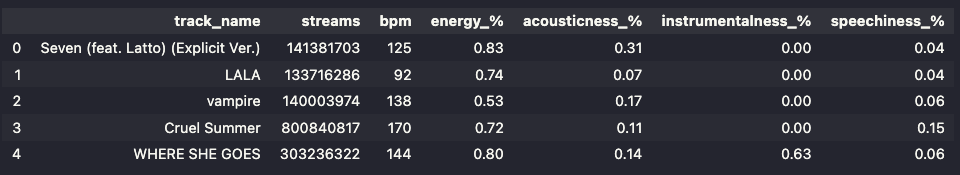

Spotify is the world's most popular music streaming service, with just over 551 Million users (For perspective, that's the equivalent of 95% of North America having a Spotify account). I am one of those 551 million users, and I listen to a lot of music. Last year, I clocked in at nearly 90k minutes of listening! All of that was on Spotify.
I enjoy many different types of songs, each with their unique identity and traits. However, some songs are a lot more popular than others. I've always wondered why that is. What qualities make a popular song? Is it the instrumentals, the acoustics, the music's energy, or luck?
This project aims to dive into some data of Spotify's top streamed songs, see their shared traits, and answer the following questions.
The dataset "Most Streamed Spotify Songs 2023" in this project is sourced from Kaggle and is by Nidula Elgiriyewithana. It provides detailed insights into the top streamed songs on Spotify. The dataset consists of 953 rows and 24 columns. The rows each represent a unique song, each with different features.
Please note that the features descriptions provided by the author of the dataset
The goal of this section is to understand the data a little better and clean the set to make sure all the data that is needed is there.
The first step was to decide what data should be analyzed to help solve the problem. I decided that of the features provided, I was only interested in using track_name, streams, BPM, energy_%, acousticness_%, instrumentalness_%, and speechiness_% as I felt that those points would be the most relevant to this project.
However, before I could filter the data, I needed to check if there were any missing values. There were a few, but they all belonged to columns not in the desired subset, so I chose to ignore them as they would be filtered out anyway.
The next step was to filter the data to produce a data frame consisting of the desired data.
Another step in cleaning the data I would take is converting the percentages from whole numbers to a value between 0 and 1. This isn't necessarily needed; however, it cleans it up a bit and makes any visualization or data manipulation easier later on as we will be dealing with more reasonable numbers.
I did this step by just taking the value in the respective columns and dividing by 100.
After cleaning, the data looked like this:
To summarize the data cleaning, I did the following steps:
No we are ready for the fun part
Here, we can see that most popular songs have between 100 BPM and 140 BPM, with the median being 120 BPM.
There are some outliers with 200 or more BPM. This data indicates that a lot of popular songs tend to be middle to faster pace.
The accousticness of songs appears to have a decently even spread, favoring towards 0 to 40 percent of acousticness amongst the most popular songs
The two above charts show that popular songs tend not to favor instrumentals, with the majority, if not all, having less than 20% in instrumentals. Reaffirming the indication that popular songs favor acoustic sound
The bigger spread of acousticness percentages compared to instrumentals could indicate that songs with some acousticness are favored over songs that focus more on instrumentals.
Speechiness percentages for popular songs appears to fall mostly into the 5% to 11% range.
This could imply that popular songs dont necessarily need a lot of lyrics.
Perhaps a case of quality over quantity however, that is subjective and would require more data to analyze that this dataset does not provide
Lastly, the data for the percived energy of the most popular songs on Spotify
Interestingly enough, unlike the other metrics where lower percentages are seen, a lot of the songs in the set have a higher perceived energy rating, with the majority with or greater than 50%
The above data analysis shows interesting trends in popular songs.
Most of the songs in the set have more acoustic than instrumental sound. Secondly, popular songs appear not to focus primarily on lyrics.
The most interesting part of the data discovered is the BPM and Energy levels of songs. Popular songs tend to be middle to fast pace and correlate to the perceived energy levels.
These findings show that a new song is more likely to be popular if it is fast-paced and high-energy. Accousticness, Instrumentals, Lyrics appear not to be as impactful as Energy and BPM
This answers my original questions, showing what traits make a song popular
The potential impact of this analysis could affect two areas, I think.
The first area is the music industry. This could show artists that focusing on music's high-energy aspects could make the song more popular.
However, this segways to the one potential negative impact. If artists focus only on making a popular song, It could potentially impact the creative aspect of music and just limit new songs to a bunch of music that sounds the same, taking away the uniqueness of songs as artists will just replicate the traits of popular songs.
The second area of impact is music streaming recommendations. If one song shares similar traits as another popular song. It could be better recommended to users.
All Code, along with the Jupeter Notebook Version of this Page can be found here